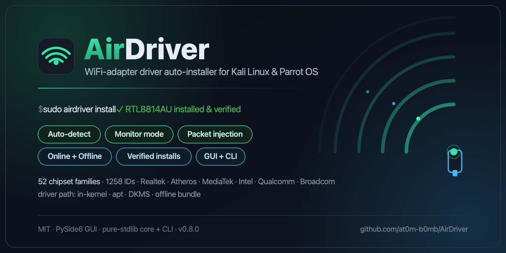

Plug in your adapter. AirDriver identifies the chipset, picks a driver path that can actually succeed on your kernel, installs it, brings the interface up — then tells you honestly whether it worked.
One line on Kali, Parrot, Debian or Ubuntu. The installer pulls the build
prerequisites, the Qt runtime libraries the GUI needs, creates an isolated virtualenv and
drops an airdriver launcher on your PATH.
# one-liner
curl -fsSL https://github.com/at0m-b0mb/AirDriver/raw/main/install.sh | sudo bash
# or from a clone
git clone https://github.com/at0m-b0mb/AirDriver.git && cd AirDriver
sudo ./install.sh
# then
airdriver # GUI
airdriver scan # CLI: what's plugged in?
sudo airdriver install # plan + install a driverNo internet on the target box? That's the catch-22
AirDriver exists for — no Wi-Fi driver means no connection to download the driver. Run
./scripts/fetch_offline_drivers.sh while you still have a connection to bundle the
driver sources, then install air-gapped.
AirDriver prefers the in-kernel driver whenever your kernel is new enough, because the fastest DKMS build is the one that never runs. Everything after the install matters just as much: a loaded module is not a working adapter until the radio is unblocked and the interface is up.
flowchart TD
A([Plug in the adapter]) --> B["Enumerate USB + PCI<br/>straight from sysfs"]
B --> C{"VID:PID in the<br/>chipset database?"}
C -->|no| Z["airdriver contribute —<br/>a pre-filled report,<br/>so the database learns it"]
C -->|yes| D{"In-kernel driver,<br/>and a new enough kernel?"}
D -->|yes| K["Load it — no build at all"]
D -->|no| P{"Best feasible method,<br/>in priority order"}
P -->|"apt · online + Debian"| APT["Install the distro<br/>DKMS package"]
P -->|"dkms_git · online"| GIT["Compile the<br/>maintainer's driver"]
P -->|"offline · bundle present"| OFF["Compile the<br/>bundled source"]
P -->|none feasible| NONE["Say so plainly —<br/>and why each option failed"]
APT -.->|"missing, or lagging<br/>behind your kernel"| GIT
K --> X
APT --> X
GIT --> X
OFF --> X
X["Blacklist conflicts · depmod · modprobe<br/>rfkill unblock · ip link up · nmcli radio on"]
X --> V{"Verify — built?<br/>loaded? interface bound?"}
V -->|yes| OK([Working adapter])
V -->|no| BAD["The honest verdict, and the exact fix:<br/>rfkill-blocked · Secure Boot ·<br/>built-but-not-loaded · no interface"]
classDef good fill:#1f9e72,stroke:#0f5f45,color:#ffffff
classDef work fill:#38bdf8,stroke:#0b6a94,color:#04212e
classDef warn fill:#f5a623,stroke:#8a5a05,color:#2b1a00
class A,K,OK good
class B,X,APT,GIT,OFF work
class Z,BAD,NONE warn
If your kernel already ships a working driver for the chip, AirDriver loads and verifies it instead of compiling anything.
When the distro's DKMS package is missing or lagging your kernel, the same step compiles the maintainer's driver from source instead of just failing.
rfkill unblock, ip link set
up, nmcli radio wifi on — the steps people forget, which is why a
"successful" install so often looks dead.
Verification checks built / loaded / bound and reports why not: Secure Boot, rfkill, missing firmware, no interface.
Every chipset AirDriver recognises, with honest monitor-mode and injection flags —
search by chipset, vendor, adapter model, or a raw vid:pid. Click a row for the full
ID list and notes. Useful before you buy, not just after.
| Chipset | Bands | Monitor | Injection | Quality | Driver path | IDs |
|---|
Monitor mode and injection are the whole reason to pick one adapter over another, so those flags are read out of the kernel's own source rather than asserted from reputation.
net/mac80211/main.c sets
interface_modes |= BIT(NL80211_IFTYPE_MONITOR) under the comment
"mac80211 always supports monitor". Every softmac driver inherits it — which is why
legacy USB parts are flagged monitor-capable even where their own driver advertises only
station mode.
supports_monitor is
false for QCA6390 and WCN6855, and ath11k clears the monitor iftype right
after registration. Those are in a huge share of 2021+ laptops.
WCN7850 sets supports_monitor = true,
so the Wi-Fi 7 part can sniff where its QCA6390 predecessor cannot. They are separate
entries so one flag cannot launder the other.
It never goes through mac80211 and only offers monitor when firmware reports the feature — which consumer firmware doesn't. That's Raspberry Pi and MacBook Wi-Fi, flagged accordingly.
If your laptop has a QCA6390 or WCN6855, monitor mode is not
available at all. Not flaky — never offered. No airmon-ng invocation changes
it, because the driver removes the capability before you ever get there. Use an external adapter
from the attack-grade list above.
Injection is only claimed where there's a track record.
ath11k, ath12k and AR5523 are flagged unknown rather than yes, and
airdriver recommend won't put them forward for attack work. Promising injection the
tool can't stand behind is worse than admitting the gap.
The core and CLI are pure standard library, so everything works over SSH on a headless box with nothing installed.
airdriver scan # detected adapters + chipset match
airdriver doctor # headers, DKMS, Secure Boot, build tools
airdriver info 0bda:8812 # everything known about a chipset
airdriver install --dry-run # preview the exact plan, change nothing
airdriver verify # is it really installed, loaded and bound?
airdriver diagnose # one shareable block for a help thread
# the lifecycle around an install
airdriver status # what's installed, built for this kernel?
sudo airdriver rebuild # after a kernel upgrade broke Wi-Fi
sudo airdriver sign # sign modules so Secure Boot loads them
sudo airdriver modeswitch # kick a "driver CD-ROM" dongle into Wi-Fi mode
airdriver recommend # which adapter should I actually buy?
airdriver contribute # report an unknown adapterA new kernel means your out-of-tree
module was never built for it. sudo airdriver rebuild. This is the single most
common Kali Wi-Fi failure.
Usually rfkill or Secure Boot.
airdriver verify names which, with the fix. Then
sudo airdriver diagnose if you need to ask someone.
A fresh DKMS module is unsigned.
sudo airdriver sign generates a key and signs it; enrolling is one manual
mokutil step plus a reboot, printed for you.
Many cheap adapters enumerate as fake
storage holding Windows drivers. sudo airdriver modeswitch ejects it so it
re-appears as Wi-Fi — under a different USB id.
airdriver contribute assembles
the descriptors, kernel and dmesg into a pre-filled issue. It never sends anything on its own,
and never collects your serial number.
Detection reads sysfs directly, so an empty list really means the kernel sees no wireless hardware. Try another port — high-power cards want USB 3.0 or a powered hub.